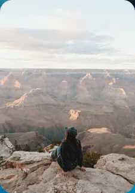
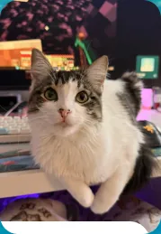
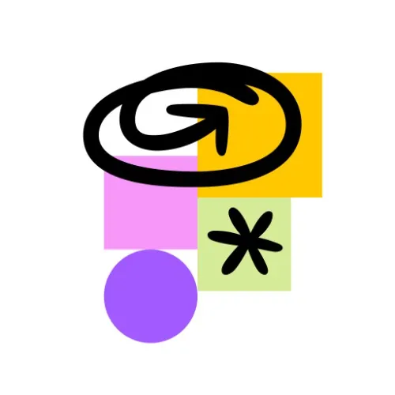
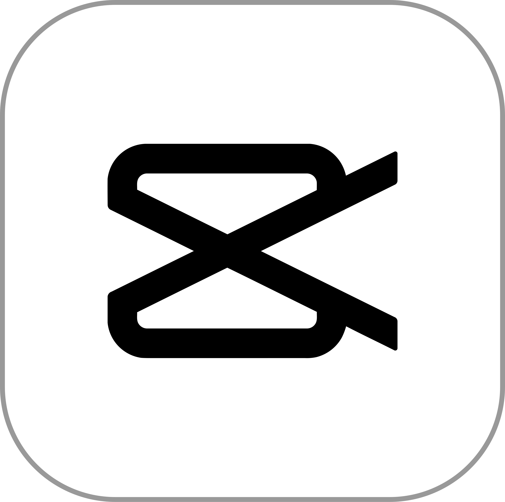

I'm a Master of Design student in Experience Design at San José State University, focused on designing experiences that help people connect, understand each other, and feel a little less alone.
My path wasn't linear — I started as a Political Science major at UC Riverside before realizing I wanted to design solutions through art, not politics. I taught myself UX/UI outside of class until it became my graduate focus.
I keep pushing myself past what I already know — competing in hackathons, going to conferences, picking up new mediums in class, and building projects alongside classmates.
Looking ahead, I'm designing at the intersection of human-centered craft and emerging tech — building experiences that feel immersive, intuitive, and genuinely delightful.




FigJam
CapCut